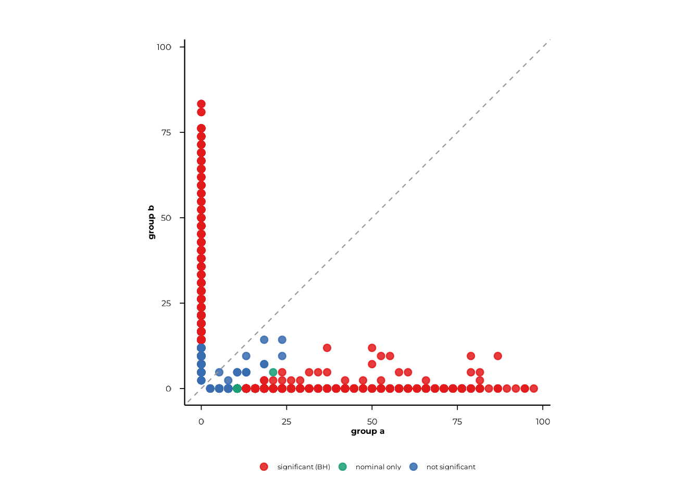
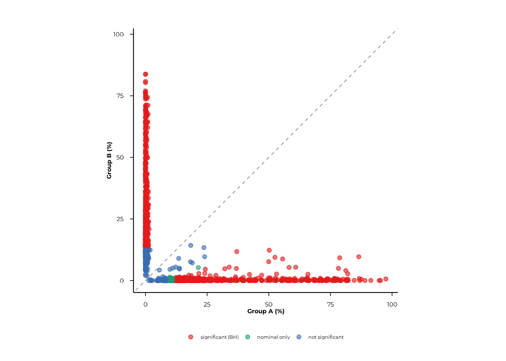
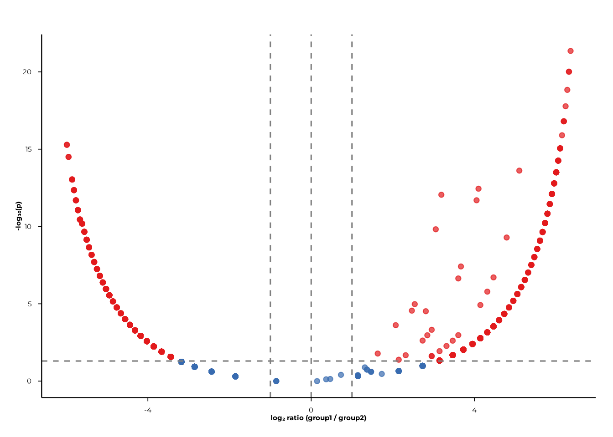
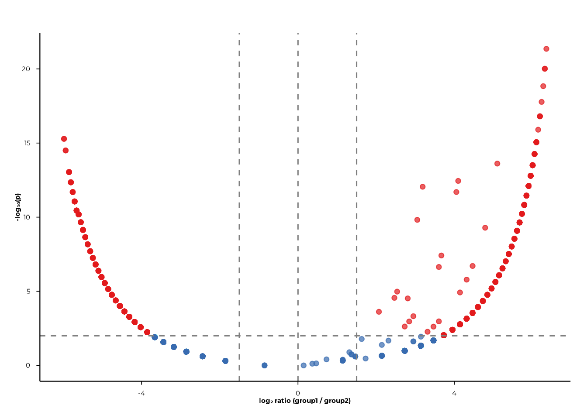
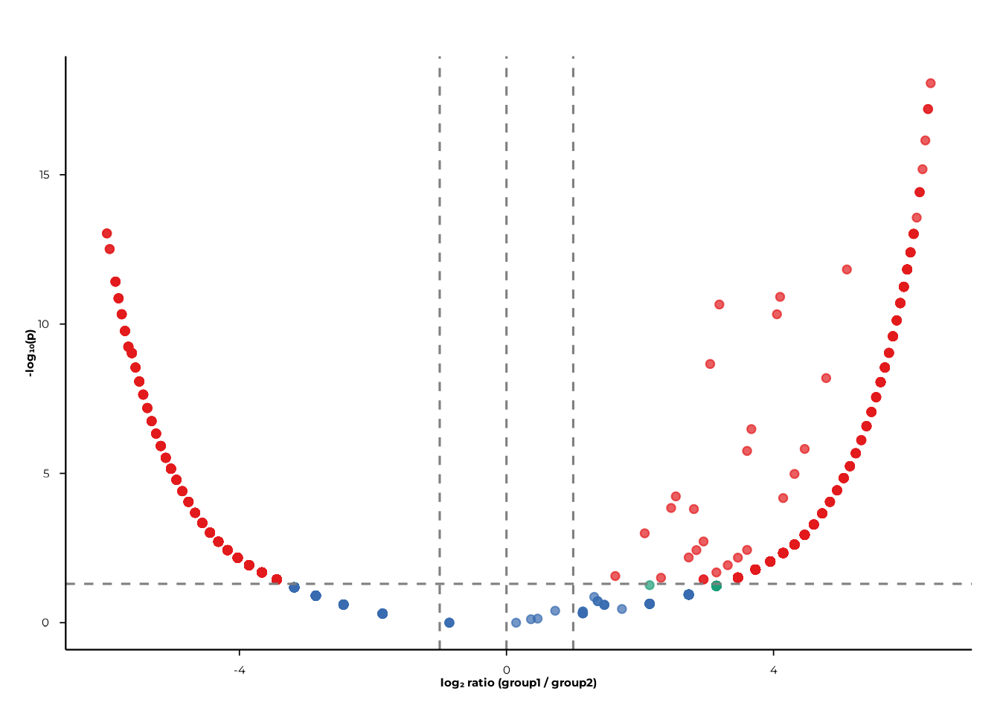

Prevalence of Presence (POP) Analysis in PhIP-seq
Source:vignettes/pop-analysis.Rmd
pop-analysis.RmdOverview
POP (Prevalence Of Presence) measures how often each feature is
detected across the samples in a group. For each
(rank, feature, group pair) the analysis asks: does the
fraction of samples carrying this feature differ between the two
groups?
This vignette walks through the complete POP workflow in phiper:
- Computing prevalence and p-values with
compute_pop() - Visualising results as scatter plots with
scatter_static()andscatter_interactive() - Volcano plots with
volcano_static()andvolcano_interactive()
Setup
Load the bundled example dataset. It contains two patient groups
(A, B) measured at two timepoints
(T1, T2) across 1 000 simulated peptides.
pd <- load_example_data()
#> [09:33:45] INFO Constructing <phip_data> object
#> -> create_data()
#> [09:33:45] INFO Fetching peptide metadata library via get_peptide_library()
#> [09:33:45] INFO Retrieving peptide metadata into DuckDB cache
#> -> get_peptide_library(force_refresh = FALSE)
#> [09:33:45] INFO Opened DuckDB connection
#> - cache dir:
#> /home/runner/.cache/R/phiperio/peptide_meta/phip_cache.duckdb
#> - table: peptide_meta
#> [09:33:45] OK Using cached download (SHA-256 match)
#> [09:33:48] OK Download complete and loaded into R
#> [09:33:53] INFO Importing sanitized metadata into DuckDB cache...
#> [09:33:55] OK peptide_meta table created in DuckDB cache
#> [09:33:55] OK Retrieving peptide metadata into DuckDB cache - done
#> -> elapsed: 9.878s
#> [09:33:55] OK Peptide metadata acquired
#> [09:33:55] INFO Validating <phip_data>
#> -> validate_phip_data()
#> [09:33:55] INFO Checking structural requirements (shape & mandatory columns)
#> [09:33:55] INFO Checking outcome family availability (exist / fold_change /
#> raw_counts)
#> [09:33:55] INFO Checking collisions with reserved names
#> - subject_id, sample_id, timepoint, peptide_id, exist,
#> fold_change, counts_input, counts_hit
#> [09:33:55] INFO Ensuring all columns are atomic (no list-cols)
#> [09:33:55] INFO Checking key uniqueness
#> [09:33:55] INFO Validating value ranges & types for outcomes
#> [09:33:55] INFO Assessing sparsity (NA/zero prevalence vs threshold)
#> - warn threshold: 50%
#> [09:33:55] INFO Checking peptide_id coverage against peptide_library
#> [09:33:55] INFO Checking full grid completeness (peptide * sample)
#> [09:33:55] OK Validating <phip_data> - done
#> -> elapsed: 0.679s
#> [09:33:55] OK Constructing <phip_data> object - done
#> -> elapsed: 10.56s
pd
#> ── <phip_data> ─────────────────────────────────────────────────────────────────
#>
#> counts (first 5 rows):
#> # A tibble: 5 × 9
#> sample_id subject_id group timepoint peptide_id exist counts_control
#> <chr> <chr> <chr> <chr> <chr> <int> <int>
#> 1 A_T1_1 1 A T1 10003 1 5
#> 2 A_T1_1 1 A T1 10017 1 37
#> 3 A_T1_1 1 A T1 10023 1 11
#> 4 A_T1_1 1 A T1 10062 1 0
#> 5 B_T1_1 1 B T1 10087 1 1
#> # ℹ 2 more variables: counts_hits <int>, fold_change <dbl>
#>
#> table size: 78,200 rows x 9 columns
#>
#> peptide library preview (first 5 rows):
#> # A tibble: 5 × 8
#> peptide_id Fullname species genus family order class common
#> <chr> <chr> <chr> <chr> <chr> <chr> <chr> <chr>
#> 1 agilent_1 Chromodomain-helicase-DNA-… Homo s… Homo Homin… Prim… Mamm… Human
#> 2 agilent_2 integral membrane protein Mycoba… Myco… Mycob… Myco… Acti… NA
#> 3 agilent_3 hypothetical protein (6/16… Mycoba… Myco… Mycob… Myco… Acti… NA
#> 4 agilent_4 envelope protein (5/8) & a… Orthof… Orth… Flavi… Amar… Flas… JEV
#> 5 agilent_5 Myosin-7 & beta-myosin hea… Homo s… Homo Homin… Prim… Mamm… Human
#> ... plus 36 more columns
#>
#> library size: 357,190 rows x 44 columns
#>
#> meta flags:
#> con: <duckdb_connection>
#> longitudinal: TRUE
#> exist: TRUE
#> fold_change: TRUE
#> raw_counts: FALSE
#> extra_cols: group, counts_control, counts_hits
#> peptide_con: <duckdb_connection>
#> materialise_table: TRUE
#> finalizer_env: <environment>
#> full_cross: FALSENote. The example data are entirely simulated and have no biological meaning. They exist solely to demonstrate the API.
Computing prevalence: compute_pop()
Unpaired design — group comparison
The workhorse function is compute_pop(). Supply a
phip_data object, the rank(s) at which prevalence should be
aggregated, and the binary grouping column(s).
pop_group <- compute_pop(
pd,
rank_cols = "peptide_id",
group_cols = "group"
)
#> [09:33:56] INFO compute_pop
#> [09:33:56] INFO compute_pop
#> - ranks : peptide_id
#> - group_cols: group
#> - exist_col : exist
#> - pop_k_min : 1
#> - paired : FALSE
#> [09:33:56] INFO ranks resolved
#> - available: peptide_id
#> [09:33:56] INFO computing cohort sizes and validating binary group_cols
#> [09:33:56] INFO computing presence per sample via k-of-n rule
#> [09:33:56] INFO counting present samples per feature (pop, unpaired)
#> [09:33:56] INFO building pairwise comparisons
#> [09:33:58] OK materialized; computing Fisher p-values
#> - table: ph_pop_20260519_093356
#> [09:33:59] OK done (compute_pop, unpaired)
#> - rows : 1950
#> - ranks : peptide_id
#> - k_min : 1
#> [09:33:59] OK compute_pop - done
#> -> elapsed: 3.272sThe result is a plain data.frame with one row per
(rank, feature, group pair):
head(pop_group)
#> rank feature group_col group1 n1 N1 prop1 percent1 group2 n2 N2
#> 1 peptide_id 10003 group A 31 38 0.8157895 81.57895 B 0 42
#> 2 peptide_id 10017 group A 6 38 0.1578947 15.78947 B 0 42
#> 3 peptide_id 10023 group A 29 38 0.7631579 76.31579 B 0 42
#> 4 peptide_id 10062 group A 11 38 0.2894737 28.94737 B 0 42
#> 5 peptide_id 10087 group A 0 38 0.0000000 0.00000 B 8 42
#> 6 peptide_id 10100 group A 0 38 0.0000000 0.00000 B 10 42
#> prop2 percent2 ratio delta_ratio p_raw n_peptides
#> 1 0.0000000 0.00000 68.52631579 33.263158 8.819969e-16 1
#> 2 0.0000000 0.00000 13.26315789 5.631579 9.186952e-03 1
#> 3 0.0000000 0.00000 64.10526316 31.052632 3.123739e-14 1
#> 4 0.0000000 0.00000 24.31578947 11.157895 1.148463e-04 1
#> 5 0.1904762 19.04762 0.06907895 -6.238095 5.758809e-03 1
#> 6 0.2380952 23.80952 0.05526316 -8.047619 1.180799e-03 1What’s in the output?
| Column | Description |
|---|---|
rank |
Rank at which the feature is defined
(e.g. "peptide_id") |
feature |
Feature identifier |
group_col |
Name of the grouping column |
group1, group2
|
The two group labels being compared |
n1, N1
|
Positives and total samples in group 1 |
prop1, percent1
|
Prevalence in group 1 (proportion and percentage) |
n2, N2
|
Positives and total samples in group 2 |
prop2, percent2
|
Prevalence in group 2 |
ratio |
prop1 / prop2 (with small-sample epsilon
correction) |
delta_ratio |
Signed fold-change: prop1/prop2 − 1 (or its
negative) |
p_raw |
Fisher’s exact test p-value (unpaired) |
n_peptides |
Number of peptides contributing to this feature |
Multiple group columns
Pass a character vector to group_cols to test several
grouping variables in one call.
pop_multi <- compute_pop(
pd,
rank_cols = "peptide_id",
group_cols = c("group", "timepoint")
)
#> [09:33:59] INFO compute_pop
#> [09:33:59] INFO compute_pop
#> - ranks : peptide_id
#> - group_cols: group, timepoint
#> - exist_col : exist
#> - pop_k_min : 1
#> - paired : FALSE
#> [09:33:59] INFO ranks resolved
#> - available: peptide_id
#> [09:33:59] INFO computing cohort sizes and validating binary group_cols
#> [09:34:00] INFO computing presence per sample via k-of-n rule
#> [09:34:00] INFO counting present samples per feature (pop, unpaired)
#> [09:34:00] INFO building pairwise comparisons
#> [09:34:03] OK materialized; computing Fisher p-values
#> - table: ph_pop_20260519_093400
#> [09:34:05] OK done (compute_pop, unpaired)
#> - rows : 3900
#> - ranks : peptide_id
#> - k_min : 1
#> [09:34:05] OK compute_pop - done
#> -> elapsed: 5.451s
# One block of rows per group column
table(pop_multi$group_col)
#>
#> group timepoint
#> 1950 1950Multiple ranks
rank_cols accepts any column present in the peptide
library. Pass "peptide_id" for peptide-level results, or
taxonomic rank columns (e.g. "family",
"genus") for higher-level aggregation.
Note on this toy example. The synthetic peptides do not map to real library annotations, so all higher-rank columns are empty. In a real PhIP-seq experiment,
family- andgenus-level rows reflect the taxonomic breadth of each patient’s reactivity.
pop_tax <- compute_pop(
pd,
rank_cols = c("peptide_id", "family", "genus"),
group_cols = "group"
)
table(pop_tax$rank)k-of-n presence threshold
By default a sample is called positive for a feature if at least one
of its contributing peptides is present (pop_k_min = 1).
Raise this threshold to require, say, at least two peptides before
calling a sample positive — useful for filtering out singleton hits.
pop_k2 <- compute_pop(
pd,
rank_cols = "peptide_id",
group_cols = "group",
pop_k_min = 2L
)
#> [09:34:05] INFO compute_pop
#> [09:34:05] INFO compute_pop
#> - ranks : peptide_id
#> - group_cols: group
#> - exist_col : exist
#> - pop_k_min : 2
#> - paired : FALSE
#> [09:34:05] INFO ranks resolved
#> - available: peptide_id
#> [09:34:05] INFO computing cohort sizes and validating binary group_cols
#> [09:34:05] INFO computing presence per sample via k-of-n rule
#> [09:34:05] INFO counting present samples per feature (pop, unpaired)
#> [09:34:05] INFO building pairwise comparisons
#> [09:34:07] OK materialized; computing Fisher p-values
#> - table: ph_pop_20260519_093405
#> [09:34:07] OK done (compute_pop, unpaired)
#> - rows : 0
#> - ranks :
#> - k_min : 2
#> [09:34:07] OK compute_pop - done
#> -> elapsed: 2.52s
# Higher k_min → fewer positives
mean(pop_k2$n1) < mean(pop_group$n1)
#> [1] NAPaired design — timepoint comparison
When the same subjects are measured at two timepoints, the paired design uses McNemar’s exact binomial test instead of Fisher’s exact test, which is more powerful because it accounts for within-subject correlation.
Set paired to the name of the column that links samples
from the same subject across timepoints.
pop_paired <- compute_pop(
pd,
rank_cols = "peptide_id",
group_cols = "timepoint",
paired = "subject_id"
)
#> [09:34:07] INFO compute_pop
#> [09:34:07] INFO compute_pop
#> - ranks : peptide_id
#> - group_cols: timepoint
#> - exist_col : exist
#> - pop_k_min : 1
#> - paired : subject_id
#> [09:34:07] INFO ranks resolved
#> - available: peptide_id
#> [09:34:07] INFO computing cohort sizes and validating binary group_cols
#> [09:34:08] INFO computing presence per sample via k-of-n rule
#> [09:34:08] INFO paired design: running McNemar exact (binomial)
#> [09:34:10] OK done (compute_pop, paired)
#> - rows : 1950
#> - ranks : peptide_id
#> - k_min : 1
#> [09:34:10] OK compute_pop - done
#> -> elapsed: 2.767s
head(pop_paired)
#> rank feature group_col group1 n1 N1 prop1 percent1 group2 n2 N2
#> 1 peptide_id 10003 timepoint T1 16 18 0.8888889 88.88889 T2 14 18
#> 2 peptide_id 10017 timepoint T1 2 18 0.1111111 11.11111 T2 2 18
#> 3 peptide_id 10023 timepoint T1 16 18 0.8888889 88.88889 T2 13 18
#> 4 peptide_id 10062 timepoint T1 4 18 0.2222222 22.22222 T2 7 18
#> 5 peptide_id 10087 timepoint T1 4 19 0.2105263 21.05263 T2 2 19
#> 6 peptide_id 10100 timepoint T1 2 19 0.1052632 10.52632 T2 8 19
#> prop2 percent2 p_raw n_peptides
#> 1 0.7777778 77.77778 0.50000 1
#> 2 0.1111111 11.11111 NA 1
#> 3 0.7222222 72.22222 0.25000 1
#> 4 0.3888889 38.88889 0.25000 1
#> 5 0.1052632 10.52632 0.62500 1
#> 6 0.4210526 42.10526 0.03125 1The paired output does not include ratio or
delta_ratio — the test statistic is the McNemar
discordant-pair ratio, which is reflected in p_raw.
names(pop_paired)
#> [1] "rank" "feature" "group_col" "group1" "n1"
#> [6] "N1" "prop1" "percent1" "group2" "n2"
#> [11] "N2" "prop2" "percent2" "p_raw" "n_peptides"Scatter plots
Scatter plots compare the prevalence of every feature in group 1 (x-axis) against group 2 (y-axis). Points on the diagonal represent features with equal prevalence across groups; deviations indicate differential carriage.
scatter_static() — ggplot2
The simplest call takes the compute_pop() result
directly. Coloring is determined automatically from BH-corrected
p-values: "significant (BH)", "nominal only",
"not significant".
scatter_static(pop_group)
Use pair to restrict the plot to a specific group
contrast and xlab/ylab to label the axes.
scatter_static(
pop_group,
pair = c("A", "B"),
xlab = "Group A (%)",
ylab = "Group B (%)",
alpha = 0.05
)Pass rank to display a single rank when the result
contains multiple ranks.
scatter_static(pop_tax, rank = "family", pair = c("A", "B"))Graphical parameters are passed via ...:
| Parameter | Default | Effect |
|---|---|---|
point_size |
2 | Point diameter |
point_alpha |
0.85 | Point opacity |
jitter_width_pp |
0 | Horizontal jitter (percentage points) |
jitter_height_pp |
0 | Vertical jitter (percentage points) |
font_size |
12 | Base font size |
scatter_static(
pop_group,
pair = c("A", "B"),
xlab = "Group A (%)",
ylab = "Group B (%)",
point_size = 1.5,
point_alpha = 0.6,
jitter_width_pp = 0.5,
jitter_height_pp = 0.5
)
color_by—scatter_static()also accepts acolor_bynamed vector (e.g.c("species" = "Staphylococcus aureus")) to highlight points by peptide-library metadata. This requires a real peptide library with matching annotations and is not demonstrated here.
scatter_interactive() — plotly
The interactive version mirrors the static API and returns a plotly widget suitable for HTML reports and Shiny dashboards. Hovering over a point shows its feature identifier, raw counts, prevalence percentages, and p-values.
scatter_interactive(
pop_group,
pair = c("A", "B"),
xlab = "Group A (%)",
ylab = "Group B (%)",
alpha = 0.05
)An optional background_df argument lets you overlay a
second set of points (e.g. all peptides from a different comparison) as
a grey reference layer:
scatter_interactive(
pop_group,
pair = c("A", "B"),
background_df = pop_multi[pop_multi$group_col == "timepoint", ],
show_background = TRUE,
background_name = "timepoint background"
)Volcano plots
Volcano plots display log₂ ratio (x-axis) against −log₁₀(p) (y-axis), making it easy to spot features with both large effect sizes and small p-values.
volcano_static() — ggplot2
volcano_static(pop_group)
Filter to a specific contrast and rank with pair and
rank:
volcano_static(
pop_group,
pair = c("A", "B"),
rank = "peptide_id"
)
Cutoffs
fc_cut (absolute log₂ fold-change) and
p_cut (p-value) control where the dashed reference lines
are drawn and how significance categories are assigned.
volcano_static(
pop_group,
pair = c("A", "B"),
fc_cut = 1.5,
p_cut = 0.01
)
BH correction
Set p_mode = "bh" to apply Benjamini–Hochberg correction
per-plot. The y-axis then displays −log₁₀(p_BH).
volcano_static(
pop_group,
pair = c("A", "B"),
p_mode = "bh",
p_cut = 0.05
)
color_by— like the scatter plots,volcano_static()accepts acolor_byargument to highlight features by peptide-library metadata. This requires real library annotations and is not demonstrated here.
volcano_interactive() — plotly
volcano_interactive(
pop_group,
pair = c("A", "B"),
p_mode = "bh",
p_cut = 0.05,
fc_cut = 1
)Hovering over a point shows the feature identifier, rank, group labels, log₂ ratio, and −log₁₀(p).
Putting it all together
A typical POP analysis runs in three steps:
# 1. Compute prevalence
pop <- compute_pop(
pd,
rank_cols = c("peptide_id", "family"),
group_cols = "group"
)
# Optional paired comparison across timepoints
pop_paired <- compute_pop(
pd,
rank_cols = "peptide_id",
group_cols = "timepoint",
paired = "subject_id"
)
# 2. Scatter: prevalence in group A vs group B
scatter_static(pop, pair = c("A", "B"), xlab = "Group A (%)", ylab = "Group B (%)")
scatter_interactive(pop, pair = c("A", "B"), xlab = "Group A (%)", ylab = "Group B (%)")
# 3. Volcano: effect size and significance
volcano_static(pop, pair = c("A", "B"), p_mode = "bh")
volcano_interactive(pop, pair = c("A", "B"), p_mode = "bh")Session info
sessionInfo()
#> R version 4.6.0 (2026-04-24)
#> Platform: x86_64-pc-linux-gnu
#> Running under: Ubuntu 24.04.4 LTS
#>
#> Matrix products: default
#> BLAS: /usr/lib/x86_64-linux-gnu/openblas-pthread/libblas.so.3
#> LAPACK: /usr/lib/x86_64-linux-gnu/openblas-pthread/libopenblasp-r0.3.26.so; LAPACK version 3.12.0
#>
#> locale:
#> [1] LC_CTYPE=C.UTF-8 LC_NUMERIC=C LC_TIME=C.UTF-8
#> [4] LC_COLLATE=C.UTF-8 LC_MONETARY=C.UTF-8 LC_MESSAGES=C.UTF-8
#> [7] LC_PAPER=C.UTF-8 LC_NAME=C LC_ADDRESS=C
#> [10] LC_TELEPHONE=C LC_MEASUREMENT=C.UTF-8 LC_IDENTIFICATION=C
#>
#> time zone: UTC
#> tzcode source: system (glibc)
#>
#> attached base packages:
#> [1] stats graphics grDevices utils datasets methods base
#>
#> other attached packages:
#> [1] phiper_0.4.1
#>
#> loaded via a namespace (and not attached):
#> [1] future_1.70.0 tidyr_1.3.2 utf8_1.2.6
#> [4] sass_0.4.10 generics_0.1.4 listenv_0.10.1
#> [7] digest_0.6.39 magrittr_2.0.5 evaluate_1.0.5
#> [10] grid_4.6.0 RColorBrewer_1.1-3 sysfonts_0.8.9
#> [13] showtextdb_3.0 blob_1.3.0 fastmap_1.2.0
#> [16] jsonlite_2.0.0 DBI_1.3.0 purrr_1.2.2
#> [19] scales_1.4.0 codetools_0.2-20 textshaping_1.0.5
#> [22] jquerylib_0.1.4 duckdb_1.5.2 cli_3.6.6
#> [25] rlang_1.2.0 chk_0.10.0 dbplyr_2.5.2
#> [28] phiperio_0.5.0 future.apply_1.20.2 parallelly_1.47.0
#> [31] withr_3.0.2 cachem_1.1.0 yaml_2.3.12
#> [34] otel_0.2.0 parallel_4.6.0 tools_4.6.0
#> [37] dplyr_1.2.1 ggplot2_4.0.3 showtext_0.9-8
#> [40] globals_0.19.1 vctrs_0.7.3 R6_2.6.1
#> [43] lifecycle_1.0.5 fs_2.1.0 htmlwidgets_1.6.4
#> [46] ragg_1.5.2 pkgconfig_2.0.3 desc_1.4.3
#> [49] pkgdown_2.2.0 RcppParallel_5.1.11-2 pillar_1.11.1
#> [52] bslib_0.11.0 gtable_0.3.6 glue_1.8.1
#> [55] Rcpp_1.1.1-1.1 systemfonts_1.3.2 xfun_0.57
#> [58] tibble_3.3.1 tidyselect_1.2.1 knitr_1.51
#> [61] farver_2.1.2 htmltools_0.5.9 labeling_0.4.3
#> [64] rmarkdown_2.31 compiler_4.6.0 S7_0.2.2